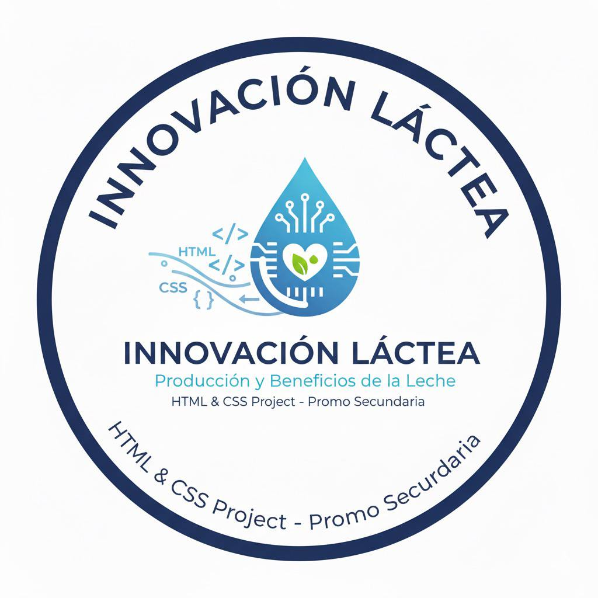
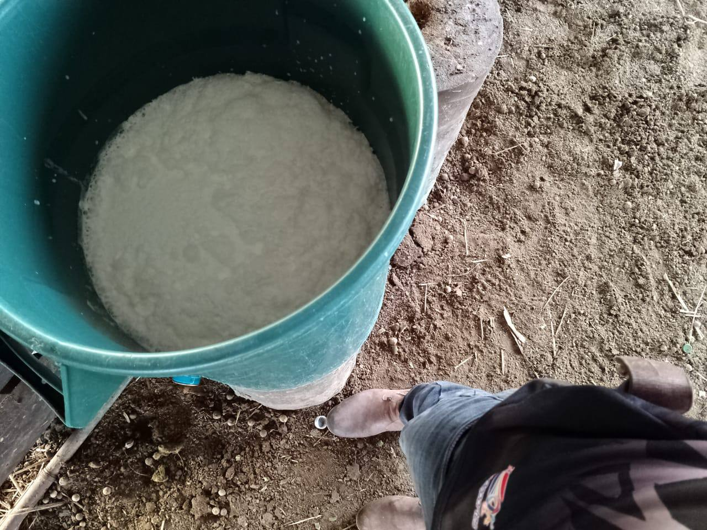

Proyecto de Emprendimiento Productivo – Sistemas Informáticos
“Innovación Láctea” es un proyecto desarrollado por estudiantes de la materia de Sistemas Informáticos, con el propósito de aplicar los conocimientos en diseño web para impulsar el sector productivo lácteo del municipio de Huacaraje, Beni.
Desarrollar una página web informativa sobre la producción láctea en Huacaraje, promoviendo el uso de la tecnología para fortalecer el conocimiento y la comercialización de productos.
El proyecto se enfoca en la creación de una plataforma digital que sirva como medio de información y promoción de la producción láctea. Su desarrollo es técnicamente viable gracias al uso de herramientas básicas como HTML, CSS y editores gratuitos. Además, su sostenibilidad está garantizada por la posibilidad de actualizar el contenido, incorporar nuevas secciones y promover alianzas con instituciones locales.
Como resultado del proyecto, se obtuvo una página web funcional que representa de forma clara y atractiva la producción láctea de Huacaraje. Este producto digital constituye un recurso educativo y promocional, beneficiando a estudiantes, productores y consumidores del municipio.
Proyecto desarrollado por estudiantes de la Unidad Educativa de Huacaraje – Área de Sistemas Informáticos.
Ubicación: Huacaraje, Iténez – Beni, Bolivia
Correo: innovacion.lactea@gmail.com